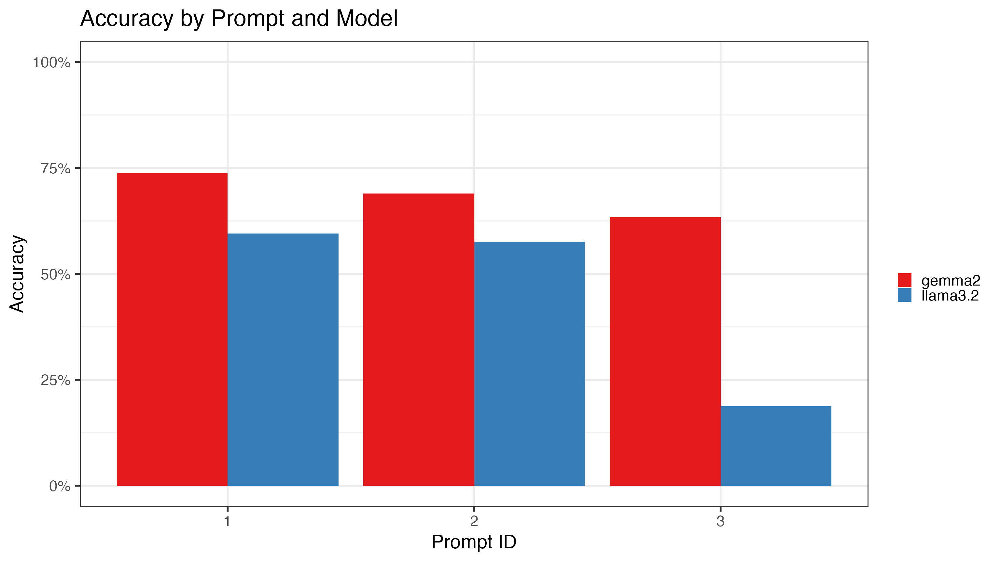
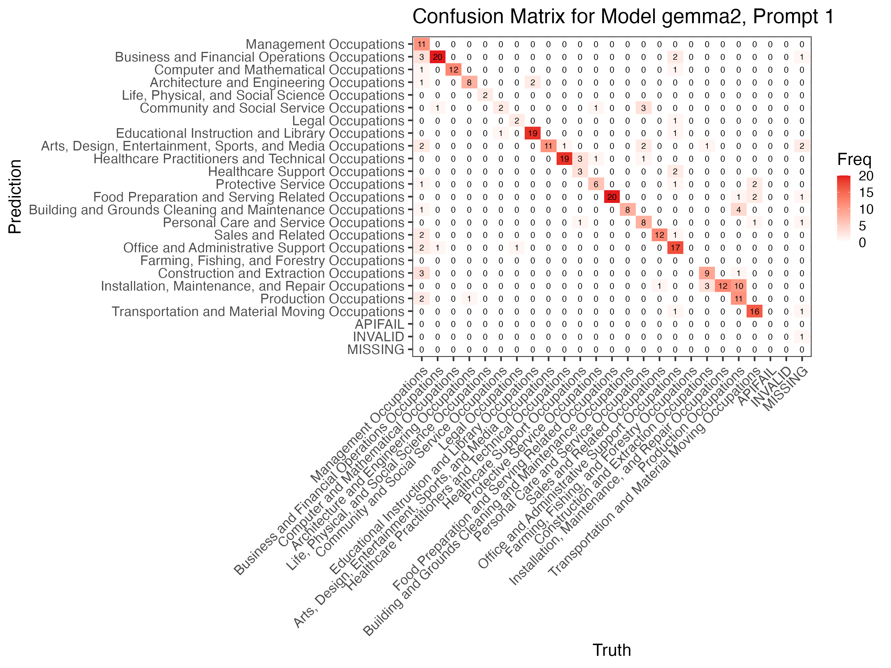

Classifying Texts with tidyllm
Source:vignettes/articles/tidyllm_classifiers.Rmd
tidyllm_classifiers.RmdClassification tasks are a key challenge when dealing with unstructured data in surveys, customer feedback, or for image analysis. This article introduces a practical, step-by-step guide to using tidyllm for classifying text, streamlining the process.
A Common Classification Task
Imagine you’ve just collected thousands of survey responses where people describe their jobs in their own words. Some responses are detailed, others are vague, and there’s plenty of variation in between. Now, you need to categorize these into standardized occupation codes, like those from the SOC classification system of the Bureau of Labor Statistics. Manually sorting through each response could take days, if not weeks, and inconsistencies between coders are almost guaranteed. For instance, your dataset might look something like this: 7,000 rows of occupation descriptions, ranging from “Librarian” to “Making sure everything runs”
library(tidyllm)
library(tidyverse)
library(glue)
occ_data <- read_rds("occupation_data.rds")
occ_data
## # A tibble: 7,000 × 2
## respondent occupation_open
## <int> <chr>
## 1 100019 Ops oversight and strategy
## 2 100266 Coordinating operations
## 3 100453 Making sure everything runs
## 4 100532 Building and demolition
## 5 100736 Help lawyers with cases
## 6 100910 I sell mechanical parts
## 7 101202 Librarian
## 8 101325 Operations planning and execution
## 9 101329 Bookkeeper
## 10 101367 Kitchen staff
## # ℹ 6,990 more rowsOur goal is to classify these messy responses into one of these 22 2-digit occupation codes:
occ_codes <- read_rds("occ_codes_2digits.rds") |>
print(n=Inf)
## # A tibble: 22 × 2
## occ2 occ_title
## <dbl> <chr>
## 1 11 Management Occupations
## 2 13 Business and Financial Operations Occupations
## 3 15 Computer and Mathematical Occupations
## 4 17 Architecture and Engineering Occupations
## 5 19 Life, Physical, and Social Science Occupations
## 6 21 Community and Social Service Occupations
## 7 23 Legal Occupations
## 8 25 Educational Instruction and Library Occupations
## 9 27 Arts, Design, Entertainment, Sports, and Media Occupations
## 10 29 Healthcare Practitioners and Technical Occupations
## 11 31 Healthcare Support Occupations
## 12 33 Protective Service Occupations
## 13 35 Food Preparation and Serving Related Occupations
## 14 37 Building and Grounds Cleaning and Maintenance Occupations
## 15 39 Personal Care and Service Occupations
## 16 41 Sales and Related Occupations
## 17 43 Office and Administrative Support Occupations
## 18 45 Farming, Fishing, and Forestry Occupations
## 19 47 Construction and Extraction Occupations
## 20 49 Installation, Maintenance, and Repair Occupations
## 21 51 Production Occupations
## 22 53 Transportation and Material Moving OccupationsIn this article, we take a structured approach to tackle the classification task efficiently. Here’s a step-by-step workflow for this kind of task:
-
Classifying and Manually Correcting a Sub-Sample:
- Pick a Sample:Start by filtering the dataset to retain only distinct occupation descriptions. Then, randomly select a sample of distinct responses to work with.
- Initial Classification: Use a simple prompt to categorize these responses into occupation codes.
- Manual Correction: Review and correct the classifications to create a reliable ground truth.
-
Optimizing the Classification Process:
-
Training/Test Split: Again split this ground truth
dataset using
rsampleinto training and test sets. - Experimentation: Test different prompts, models, and parameters on the training set, comparing one-shot and multi-shot approaches.
-
Model Evaluation: Use
yardstickto find the best-performing combination on the training data. - Testing: Apply the best-performing model to the test set to evaluate how well it performs on unseen occupation descriptions.
-
Training/Test Split: Again split this ground truth
dataset using
-
Scaling Up to the Full Dataset:
- Full Classification: Use the validated model setup to classify the entire dataset efficiently.
Classifying a Sub-Sample
We start by ensuring we only classify distinct responses. This eliminates duplicates and ensures a more efficient and reliable classification process:
# Pick only distinct occupations from the dataset
distinct_occupations <- occ_data |>
distinct(occupation = occupation_open)
print(distinct_occupations, n = 5)
## # A tibble: 2,209 × 1
## occupation
## <chr>
## 1 Ops oversight and strategy
## 2 Coordinating operations
## 3 Making sure everything runs
## 4 Building and demolition
## 5 Help lawyers with cases
## # ℹ 2,204 more rowsThis will help us focus on variations across distinct occupations, avoiding repeated classification efforts on identical responses.
Next, we divide the distinct occupations into a sub-sample for manual
classification and a remaining portion to be used later. We use the
initial_split() function from the rsample
package, splitting 10% of the data into a smaller test set for manual
correction and model training:
#Set a seed for reproducability
set.seed(123)
# Split the distinct occupations into a sub-sample (10%) and the rest (90%)
library(rsample)
occ_split <- initial_split(distinct_occupations, prop = 0.8)
# Retrieve the sub-sample and the remaining data
rest_of_data <- training(occ_split)
sub_sample <- testing(occ_split)
print(sub_sample, n = 5)
## # A tibble: 442 × 1
## occupation
## <chr>
## 1 Making sure everything runs
## 2 Bartender
## 3 Post-secondary health education
## 4 Food servin
## 5 Exectutive assistant
## # ℹ 437 more rowsBy splitting the data, we now have a smaller sub-sample of 422 observations to work with during the initial classification stage.
A simple sequential classifier
To classify this sub-sample of occupation descriptions, we first
generate prompts with a specific classification task for each
occupation. Each prompt directs the model to classify the occupation
based on a numerical code, ensuring that the output aligns with our
coding system. We use glue() to create prompts for each
occupation description to the prompt with {occupation} and
purrr::map() to pass each prompt to
llm_message(). The output is a list of messages ready for
submission to a large language model.
prompts <- glue('
Classify this occupation response from a survey: {occupation}
Pick one of the following numerical codes from this list.
Respond only with the code!
11 = Management Occupations
13 = Business and Financial Operations Occupations
15 = Computer and Mathematical Occupations
17 = Architecture and Engineering Occupations
19 = Life, Physical, and Social Science Occupations
21 = Community and Social Service Occupations
23 = Legal Occupations
25 = Educational Instruction and Library Occupations
27 = Arts, Design, Entertainment, Sports, and Media Occupations
29 = Healthcare Practitioners and Technical Occupations
31 = Healthcare Support Occupations
33 = Protective Service Occupations
35 = Food Preparation and Serving Related Occupations
37 = Building and Grounds Cleaning and Maintenance Occupations
39 = Personal Care and Service Occupations
41 = Sales and Related Occupations
43 = Office and Administrative Support Occupations
45 = Farming, Fishing, and Forestry Occupations
47 = Construction and Extraction Occupations
49 = Installation, Maintenance, and Repair Occupations
51 = Production Occupations
53 = Transportation and Material Moving Occupations
99 = Missing Occupation (No clear occupation)', occupation = sub_sample$occupation)
classification_tasks <- map(prompts,llm_message)A typical message from this list of classification tasks looks like this:
classification_tasks[[1]]
## Message History:
## system:
## You are a helpful assistant
## --------------------------------------------------------------
## user:
## Classify this occupation response from a survey: Making sure
## everything runs
##
## Pick one of the following numerical codes from this list.
## Respond only with the code!
## 11 = Management Occupations
## 13 = Business and Financial Operations Occupations
## 15 = Computer and Mathematical Occupations
## 17 = Architecture and Engineering Occupations
## 19 = Life, Physical, and Social Science Occupations
## 21 = Community and Social Service Occupations
## 23 = Legal Occupations
## 25 = Educational Instruction and Library Occupations
## 27 = Arts, Design, Entertainment, Sports, and Media
## Occupations
## 29 = Healthcare Practitioners and Technical Occupations
## 31 = Healthcare Support Occupations
## 33 = Protective Service Occupations
## 35 = Food Preparation and Serving Related Occupations
## 37 = Building and Grounds Cleaning and Maintenance
## Occupations
## 39 = Personal Care and Service Occupations
## 41 = Sales and Related Occupations
## 43 = Office and Administrative Support Occupations
## 45 = Farming, Fishing, and Forestry Occupations
## 47 = Construction and Extraction Occupations
## 49 = Installation, Maintenance, and Repair Occupations
## 51 = Production Occupations
## 53 = Transportation and Material Moving Occupations
## 99 = Missing Occupation (No clear occupation)
## --------------------------------------------------------------To classify an initial subset, which will need to be manually
verified later, it is beneficial to use a reliable commercial model, as
its output typically requires fewer adjustments. Here, we choose
Claude-3.5-Sonnet, setting .temperature to 0 to ensure
deterministic (non-random) responses. Initially, we test our prompt with
the standard sequential chat(claude()) approach. This
preliminary step allows us to verify that the model interprets the
prompt accurately and produces output in the required format before
running the full batch of classification tasks.
To this end, we create a tibble containing the occupation
descriptions from our sub-sample alongside the prepared classification
tasks. We then randomly select 10 rows from this tibble. Each selected
occupation is passed sequentially through the
classify_sequential() function that passes each
classification task through chat(claude()), fetches the
reply with get_reply() and converts the text output of the
model to a numeric code with parse_number(). Finally, the
results are joined with the occ_codes table to map the
numeric occupation codes to their corresponding occupation labels,
providing an interpretable output:
classify_sequential <- function(occupation_open,message){
raw_code <- message |>
chat(claude(.temperature = 0)) |>
get_reply() |>
parse_number()
tibble(occupation_open=occupation_open, occ2=raw_code)
}
tibble(occupation_open = sub_sample$occupation, message = classification_tasks) %>%
slice_sample(n=10) |>
pmap_dfr(classify_sequential) |>
left_join(occ_codes, by="occ2")## # A tibble: 10 × 3
## occupation_open occ2 occ_title
## <chr> <dbl> <chr>
## 1 Fine Carpentry 47 Construction and Extraction Occupations
## 2 Eyeglass makin' 51 Production Occupations
## 3 Layin' down shingles 47 Construction and Extraction Occupations
## 4 Handle construction budgets 13 Business and Financial Operations Occu…
## 5 Bodyshop guy 49 Installation, Maintenance, and Repair …
## 6 Hair dresser 39 Personal Care and Service Occupations
## 7 Sort and deliver mail 43 Office and Administrative Support Occu…
## 8 Ops oversight 11 Management Occupations
## 9 Oversee all cleaning operations 11 Management Occupations
## 10 Systems administrator 15 Computer and Mathematical OccupationsThis output demonstrates that the model accurately interprets the
prompts, assigning each occupation description to a suitable category.
Another check before we classify the entire set of messages in
classification_tasks using Anthropic’s Claude-3.5-Sonnet
model, is to look at the token-usage and the cost of a typical message
with get_metdadata():
classification_tasks[[1]] |>
chat(claude(.temperature = 0)) |>
get_metadata()## # A tibble: 1 × 5
## model timestamp prompt_tokens completion_tokens total_tokens
## <chr> <lgl> <dbl> <dbl> <dbl>
## 1 claude-3-5-sonnet-2024… NA 349 5 354Assuming all messages in this initial batch are roughly similar, we can expect all 442 messages to need around 150,000 prompt tokens and 2200 completion tokens. At the time of writing, the price for one million input tokens on Claude was 3$, while one million output tokens did cost 15$. Prices using batch request are only half. Classifying our subsample with batch-processing costs roughly 22 cents.
Using a claude batch request
Batch-processing offers a significant cost advantage over sequential classification. Anthropic charges half the price per token for batch requests compared to single requests, making it an efficient choice for large-scale tasks. While batch requests do not return results instantly, they are typically processed within 24 hours, often much faster. A Message Batch is limited to either 10,000 requests or 32 MB in size, whichever is reached first.
To initiate a batch request, we use the
send_claude_batch() function (you can of course also use
the more general verb send_batch(claude()). This batch
submission function returns the same list of classification tasks that
we uploaded, but marked with an attribute that contains a batch-id from
the Claude API as well as unique names for each list element that can be
used to stitch together messages with replies, once the batch is ready.
If you supply a named list of messages, these names are used as
identifiers (ensuring they are unique before submission). For convenient
access later, we save the batch output locally, allowing us to resume
processing from the batch even after closing the R session:
classification_tasks |>
send_claude_batch(.temperature = 0) |>
write_rds("sub_sample_batch.rds")We can check the status of a batch with:
read_rds("sub_sample_batch.rds") |>
check_claude_batch()## # A tibble: 1 × 8
## batch_id status created_at expires_at req_succeeded
## <chr> <chr> <dttm> <dttm> <dbl>
## 1 msgbatch_015JWDH… ended 2024-10-31 16:33:35 2024-11-01 16:33:35 442
## # ℹ 3 more variables: req_errored <dbl>, req_expired <dbl>, req_canceled <dbl>We now see that our batch was created and its status is
ended. All 442 requests succeeded. Batch results can be
downloaded within 29 days after creation. You can see all available
batches in the API with list_claude_batches() or in the
Anthropic console. To download the results of our batch we use the
fetch_claude_batch() function:
occ2_codes <- read_rds("sub_sample_batch.rds")) |>
fetch_claude_batch() |>
map_chr(get_reply) |>
parse_number()
tibble(occupation_open = sub_sample$occupation,
occ2 = occ2_codes) |>
left_join(occ_codes, by="occ2") |>
writexl::write_xlsx("ground_truth_excel.xlsx")We get a list of messages with assistant replies from
fetch_claude_batch() that we pass into
map_chr(get_reply) to get assistant replies from each
message as a character vector. We then again parse the numeric code and
merge occupation titles. To ensure that the output is correct, we can
export the results to Excel with write_xlsx from the
writexl package and manually fix miss-classifications.
A manual review of the classifier’s output showed highly promising
results. Out of 443 classifications, only 9 needed corrections,
indicating an error rate of just 2% for the claude()-based
classifier with our initial prompt. Most issues arose from not correctly
identifying unclear responses as missing, such as “Doin’ the numbers” or
“Barster” (a potential mix of Barrister or Barkeeper).
At this point we could stop and proceed to classify the entire data
with the send_claude_batch(), given its strong performance
and manual validation on unseen data and that scaling up to the data
would cost less than 1.50$. However, to illustrate the general principle
how to find good LLM-based classifiers when you are less sure, we will
now use the initial ground truth we have built as a base to experiment
with different models and prompts. For example, we could try to
determine if simpler alternatives or small local models would perform
just as well.
Optimizing and Testing Classifiers
Next, we present a general approach to optimize and test different
LLM-based classifiers. First, we split the dataset into training and
test sets using rsample to ensure that we can experiment
with different prompts and setups on training data but only evaluate our
final model performance on unseen data.
ground_truth <- readxl:::read_xlsx("ground_truth_corrected.xlsx")
# Split the ground-truth into training and testing sets
set.seed(123)
gt_split <- initial_split(ground_truth, prop = 0.7)
# Retrieve training and testing data
train_data <- training(gt_split)
test_data <- testing(gt_split)
print(train_data,n=5)
## # A tibble: 309 × 3
## occupation_open occ2 occ_title
## <chr> <dbl> <chr>
## 1 Computer network technician 15 Computer and Mathematical Occupations
## 2 Educational support 25 Educational Instruction and Library Occupat…
## 3 Fine Carpentry 47 Construction and Extraction Occupations
## 4 Keep things organized 43 Office and Administrative Support Occupatio…
## 5 Group fitness instructor 39 Personal Care and Service Occupations
## # ℹ 304 more rowsWriting a flexible classifier function
To test different prompts and models systematically we need to create
a flexible classifier function that can handle different prompts or
models that can work with any api-function including local models that
do not support batch requests. This function can take the open
occupation question, our ground-truth for occ2
a prompt and prompt_id, a
provider and a model as arguements allowing us
to test each occupation classification across a grid of prompts and
models.
# External numerical code list for reusability
numerical_code_list <- c('
11 = Management Occupations
13 = Business and Financial Operations Occupations
15 = Computer and Mathematical Occupations
... abreviated ...
51 = Production Occupations
53 = Transportation and Material Moving Occupations
99 = Missing Occupation')
# Classification function that accepts prompt, api_function, and model
# as well as the ground truth to pass through as arguments
classify_occupation_grid <- function(occupation,
occ2,
prompt,
prompt_id,
provider,
model){
# Output what the model is currently doing to the console
glue("Classifying: {model} - {prompt_id} - {occupation}\n") |> cat("\n")
# List of valid codes as strings
valid_codes <- as.character(occ_codes$occ2)
# Initialize classification_raw
classification <- tryCatch({
# Get the assistant's reply using the dynamically provided API function and model
assistant_reply <- llm_message(prompt) |>
chat(provider(.model = model, .temperature = 0)) |>
get_reply() |>
str_squish()
# Validate the assistant's reply
if (assistant_reply %in% valid_codes) {
as.integer(assistant_reply)
} else {
98L # Return 98 for invalid responses
}
}, error = function(e){
97L # Return 97 in case of an error (e.g., API failure)
})
# Return a tibble containing the original occupation description and classification result
tibble(
occupation_open = occupation,
occ2_predict = classification,
occ2_truth = occ2,
model = model,
prompt_id = prompt_id
)
}Defining the Prompt and Model Grid
We define a set of prompts and models that we want to test. This will allow us to apply the classifier across different configurations and compare results. Here’s how the prompts and models are set up:
- Prompts:
- Prompt 1: A detailed prompt, asking the model to classify occupations and warning it not to make guesses.
- Prompt 2: Explicitly ask to handle invalid responses by returning a special code (99) when the input does not resemble a valid occupation.
- Prompt 3: A shorter, more concise version to test whether the model performs similarly with less detailed instructions.
- Models:
-
Llama3.2:3B: A opensource large language model with
just 3 billion parameters that is very fast, when you run it locally via
ollama() - Gemma2:9B: Another candidate model, which performs well for classification tasks, but is more than double the size of Lama3.2 and is therefore somewhat slower.
We set up a grid combining all the prompts and models. The
expand_grid() function from the tidyverse is a useful tool
here to create every possible combination of prompts and models, which
we will use to evaluate the classifier:
prompts <- tibble(prompt =
c( #Original prompt
'Classify this occupation response from a survey: {occupation}
Pick one of the following numerical codes from this list.
Respond only with the code!
{numerical_code_list}',
#Explicit instruction to avoid classifying something wrong
'Classify this occupation response from a survey: {occupation}
Pick one of the following numerical codes from this list.
Respond only with the code!
{numerical_code_list}
If this does not look like a valid occupation response reply with
just 99
',
#Shorter prompt
'Classify this occupation: {occupation}.
Respond only with one of the following codes:
{numerical_code_list}'
),
prompt_id = 1:3)
grid <- expand_grid(train_data,
prompts,
model = c("llama3.2", "gemma2")) |>
arrange(model) %>% # Arrange by model so ollama does not reload them often
rename(occupation = occupation_open) |>
rowwise() |> # Glue together prompts and occupation row-by-row
mutate(prompt = glue(prompt)) |>
ungroup() |> # Ungroup after the rowwise operation
select(model,occupation,occ2,prompt_id,prompt)
nrow(grid)
## [1] 1854To run the classification across the entire grid, we use
pmap_dfr() from the purrr package, which allows us to
iterate over multiple arguments simultaneously. Each combination of
occupation response, prompt, and model is passed into the
classify_occupation() function, and the results are
concatenated into a single tibble:
grid_results <- grid |>
pmap_dfr(classify_occupation_grid,
provider = ollama)## Classifying: gemma2 - 1 - Computer network technician
## Classifying: gemma2 - 2 - Computer network technician
## Classifying: gemma2 - 3 - Computer network technician
## Classifying: ...⚠️ Note: Running an extensive classification grid like this, especially with large datasets or slow models, can take a significant amount of time. Therefore, it’s often reasonable to save intermediate results periodically, so that you don’t lose progress if something goes wrong (e.g., a crash or a network issue). By combining
pwalk()withsave_rds(), you can run each combination of the grid independently and store results incrementally.
After we run our grid we get some insights into how well models and prompts work on the train data. Here we can experiment with different models and parameters as much as we want and see what works.
Accuracy estimates
To create an overview of prediction accuracy overview we use the
yardstick package. For some functions in
yardstick, we also need to encode the ground truth and the
model predictions as factors:
library(yardstick)
##
## Attaching package: 'yardstick'
## The following object is masked from 'package:readr':
##
## spec
gr_factors <- grid_results |>
mutate(across(starts_with("occ2_"),
~factor(.x,
levels=c(occ_codes$occ2,97, 98,99),
labels=c(occ_codes$occ_title,"APIFAIL","INVALID","MISSING")
))) First we just just calculate and plot the model accuracy:
accuracy <- gr_factors |>
group_by(prompt_id, model) |>
accuracy(truth = occ2_truth, estimate = occ2_predict)
accuracy |>
ggplot(aes(x = as.factor(prompt_id), y = .estimate, fill = model)) +
geom_bar(stat = "identity", position = "dodge") +
labs(title = "Accuracy by Prompt and Model", x = "Prompt ID", y = "Accuracy", fill="") +
theme_bw(22) +
scale_y_continuous(labels = scales::label_percent(),limits = c(0,1)) +
scale_fill_brewer(palette = "Set1")
Here are the main insights of our classification experiment:
- Gemma2 consistently outperforms llama3.2, but even gemma2’s top performance on Prompt 1 (79.1) falls far short of Claude Sonnet’s 98% accuracy in the initial run.
- The simplified prompt clearly introduces challenges, especially for the smaller models like llama3.2, which shows particularly poor performance (as low as 20.2% on Prompt 3). This suggests that these models might not generalize well to slightly varied or less explicit prompts, whereas Claude is able to handle the variations with far greater ease.
Let’s look at the confusion matrix for the top gemma2 performance to see whether any specific occupation category causes problems here:
conf_mat <- gr_factors |>
filter(prompt_id == 1, model == "gemma2") |>
conf_mat(truth = occ2_truth, estimate = occ2_predict)
# Autoplot the confusion matrix
autoplot(conf_mat, type = "heatmap") +
scale_fill_gradient(low = "white", high = "#E41A1C") +
ggtitle("Confusion Matrix for Model gemma2, Prompt 1") +
theme_bw(22) +
theme(axis.text.x = element_text(angle = 45, hjust = 1))
## Scale for fill is already present.
## Adding another scale for fill, which will replace the existing scale.
A lot of the miss-classifications are in management occupations and
office services, missing occupations are again not classified well, but
classified into other occupations. So there is nothing here that seems
like an immediate easy fix. Yet, there are other tricks to try that go
beyond simple one-shot classification. A common idea is to use multi-shot
classifications (and give the model classification examples in the
prompt, or even guide its output by letting it complete conversations
where it answers the right way). The function
df_llm_message() let’s you easily built such message
histories where you put some words into the mouth of the model. But
there are other ways that can help you increase accuracy. A popular one
is to first let the model reason in detail what the best candidates for
classification would be to build a chain of thought before it gives the
final answer.
Multistep Chain-of-Thought Prompting
For this we need a major change in the classification function, because we send two messages to the model. A first one elicits a reasoning step, the second one asks for the final code, based on the answer to the first message. This is easily doable with the message-chaining abilities of tidyllm
Here is a modified chain of thought prompting function with a reasoning and an output step:
classify_occupation_cot <- function(occupation,
occ2,
provider,
model,
stream = FALSE){
# Output what the model is currently doing to the console
glue("Classifying with CoT: {model} - {occupation}\n") |> cat("\n")
# Step 1: Ask the model to think through the problem
prompt_reasoning <- glue('
Think about which of the following occupation codes would best describe this occupation description from a survey respondent: "{occupation}"
{numerical_code_list}
Explain your reasoning for the 3 top candidate codes step by step. Then evaluate which seems best.
')
reasoning_response <- tryCatch({
conversation <<- llm_message(prompt_reasoning) |>
chat(provider(.model = model, .temperature = 0, .stream=stream))
conversation |>
get_reply()
}, error = function(e){
conversation <<- llm_message("Please classify this occupation response: {occupation}")
"Error in reasoning step."
})
# Step 2: Ask the model to provide the final answer
prompt_final <- glue('
Based on your reasoning, which code do you pick? Answer only with a numerical code!
')
final_response <- tryCatch({
conversation |>
llm_message(prompt_final) |>
chat(provider(.model = model, .temperature = 0, .stream=stream)) |>
get_reply() |>
str_squish()
}, error = function(e){
"97"
})
# Validate the model's final response
valid_codes <- as.character(occ_codes$occ2)
classification <- if (final_response %in% valid_codes) {
as.integer(final_response)
} else {
98L # Return 98 for invalid responses
}
# Return a tibble containing the original occupation description and classification result
tibble(
occupation_open = occupation,
occ2_predict = classification,
occ2_truth = occ2,
model = glue("{model}_cot"),
reasoning = reasoning_response,
final_response = final_response
)
}Note that this increases the compute time for gemma2 massively because it now produces a multiple of the output from before. Each run produces roughly a page of reasoning, before the second question generates a number, while our original prompting strategy just gave us one number. So run-times increase strongly.
Note: To test more complicated prompting strategies like this in realtime, another feature of tidyllm comes in handy. You can stream back responses just like in online chatbot interfaces during a first test run with the
.stream-argument for most provider functions inchat()to immediately see whether you made strange errors in your prompting. Therefore, here we pass the stream arguement troughclassify_occupation_cot()to first test the function and the prompting on single inputs before we scale it up to the whole data.
Let’s run this function with gemma2:
results_cot <- grid |>
filter(model=="gemma2", prompt_id ==1) |>
select(-prompt,-prompt_id) |>
pmap_dfr(classify_occupation_cot,api_function = ollama, stream=FALSE)## Classifying with CoT: gemma2 - 1 - Computer network technician
## Classifying with CoT: gemma2 - 2 - Educational support
## Classifying with CoT: gemma2 - 3 - Fine Carpentry
## Classifying with CoT: ...Did this work? It turns out in this case it did not!
results_cot |>
mutate(across(starts_with("occ2_"),
~factor(.x,
levels=c(occ_codes$occ2,97, 98,99),
labels=c(occ_codes$occ_title,"APIFAIL","INVALID","MISSING")
))) |>
accuracy(truth = occ2_truth, estimate = occ2_predict)
## # A tibble: 1 × 3
## .metric .estimator .estimate
## <chr> <chr> <dbl>
## 1 accuracy multiclass 0.754The accuracy is even worse than without the reasoning step! One interesting thing though is that the model has the right classification in one of its candidates in the reasoning step for 94% of the cases. So probably, there is still some way to get a better final result out of gemma2:
results_cot |>
rowwise() |>
mutate(reasoning_classifications = str_extract_all(reasoning,"\\d{2}"),
reasoning_classifications = list(map_int(reasoning_classifications, as.integer)),
right_in_reasoning = occ2_truth %in% reasoning_classifications
) |>
ungroup() |>
count(right_in_reasoning) |>
mutate(pct=n/sum(n))
## # A tibble: 2 × 3
## right_in_reasoning n pct
## <lgl> <int> <dbl>
## 1 FALSE 19 0.0615
## 2 TRUE 290 0.939However, in our specific case we already had a clear favorite final
choice without even needing to do further testing. We already know the
98% test performance for Claude Sonnet 3.5, since we manually checked
it. So no further check of prompt or models on the test data is needed.
We can just run our entire sample through
claude_send_batch()
Conclusion
In this article, we’ve demonstrated how tidyllm can be
effectively used to tackle complex text classification tasks. By walking
through a typical process step-by-step, from sample selection and prompt
design to model testing and optimization, we’ve highlighted the
flexibility of the package in dealing with real-world data.